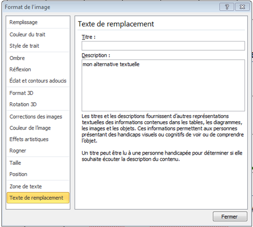
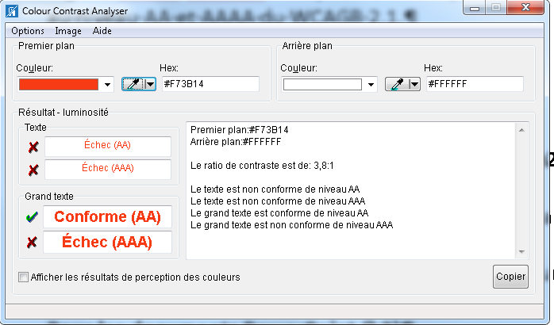

À propos
Documentation sous licence CC BY SA 3.0. Le code source de ce site ainsi que celui des exemples est disponible sur notre compte github.
Le logo Orange ainsi que certaines images et captures sont la propriété d'Orange :
Copyright (C) 2016 Orange SA All rights reserved
Liste des fichiers concernés
Gestion des cookies
Vous pouvez modifier à tous moments vos préférences directement depuis le panneau de gestion des cookies.
Votre avis compte
Vous avez une remarque, une suggestion à apporter ?
Vérifiez que ceci n’a pas déjà été remonté par quelqu’un d’autre en consultant la liste des « issues » sur notre compte github.
Si vous ne trouvez rien concernant votre remarque, adressez-nous votre commentaire via github.
Recommandations accessibilité Orange pour l’éditorial
Recommandations éditoriales générales
Les recommandations générales décrivent les recommandations à respecter quel que soit le type de contenu (web, email, document Word, etc.).
Recommandations spécifiques par type de contenu
Les recommandations suivantes décrivent les règles spécifiques à respecter en fonction du type de document :
Documents Word : section consacrée à la création de documents Word accessibles.
Documents PowerPoint : section consacrée à la création de présentations PowerPoint accessibles.
Documents PDF : section consacrée à la rédaction de documents PDF accessibles.
Rédiger des emails accessibles : section consacrée à la rédaction de « pushmail » accessibles.
Fournir des contenus vidéos ou audios : section consacrée à la mise en place dans le contenu de vidéos ou de fichiers audios accessibles.
Accessibilité des documents PowerPoint
Cette section contient des recommandations pour :
Créer des documents PowerPoint accessibles
Produire un document PowerPoint accessible nécessite de respecter différentes recommandations. Elles sont synthétisées ci-après (guides détaillés consultables sur le site de la DINSIC). Pour vous aider PowerPoint intègre un outil permettant de vérifier l’accessibilité d’une présentation. Cet outil identifie les principales erreurs et propose des solutions. N’hésitez pas à vous y référer.
Masques de diapositive
Définir des masques de diapositives est la première chose à faire et une condition sine qua none pour créer une présentation homogène et accessible.
- Ouvrir le mode Masque des diapositives pour mettre en forme vos diapositives (dans l’onglet
Affichage, sélectionnerMasque des diapositives). - Utiliser les sous-menus
Mise en pages du masqueetInsérer un espace réservé. - Éviter d’ajouter des Zones de texte ou des Images directement dans la présentation via le menu
Insertion. - Créer autant de masques que de types de diapositives nécessaires.

Remarque : Si vous modifiez le masque des diapositives ou les mises en pages après avoir créé les différentes diapositives, vous devrez réappliquer les mises en page modifiées aux diapositives existantes de votre présentation en mode Normal.
Attributs de la présentation
1. La langue
Pour qu’un lecteur d’écran puisse restituer correctement le contenu de votre présentation :
- La langue principale doit être définie dans le menu :
Fichier > Options > Langue. - Tout changement de langue ponctuel doit être signalé en sélectionnant le groupe de mots concerné puis
Révision > Langue > Définir la langue de vérification.
2. Les autres propriétés
Renseigner les champs « Titre », « Auteur » et « Mots clefs » dans la zone « Propriétés » (colonne de droite), accessible depuis le menu Fichier > Informations.
Ces informations accessibles à tous via un simple clic dans Windows sur un fichier (affichage dans la partie basse de la fenêtre de dialogue) ou via un clic droit dans Propriétés, pourront également être lues par un lecteur d’écran.

Titre des diapositives
Pour éviter toute confusion entre des diapositives, notamment si l’utilisateur parcourt une présentation à l’aide d’un lecteur d’écran :
donner un titre spécifique à chaque diapositive, à insérer dans la zone : « Cliquer pour ajouter un titre ».
Rédaction des contenus
Limiter les abréviations et acronymes, et expliciter à la première occurrence ceux qui ne font pas partie du langage courant.
Conserver l’accentuation sur les majuscules (exemple : É ou Ç) pour qu’elles puissent être lues correctement par un lecteur d’écran ; pour ce faire : utiliser le menu Insertion > Symbole ou les raccourcis clavier ci-dessous.
| Lettre | raccourci Windows | raccourci Mac |
|---|---|---|
| À | Alt Gr + ` (touche 7) puis A majuscule | Maj lock puis à |
| Ç | alt + 128 | Option + ç |
| È | Alt Gr + ` (touche 7) puis E majuscule | Maj lock puis è |
| É | alt + 144 | Maj lock puis é |
| Ê | ^ puis E majuscule | ^ puis E majuscule |
Mise en forme des contenus
Utiliser une police de caractères sans serif (sans empattement comme c’est le cas d’Arial et Helvetica) en corps 12 pixels minimum.
Commencer les phrases par une majuscule et ne pas abuser des phrases entièrement écrites en majuscules.
Eviter de justifier le texte et privilégier l’alignement à gauche.
Ne pas utiliser de retour chariot ou de tabulation pour espacer des paragraphes, utiliser les options disponibles via un clic droit > Paragraphe > Retrait et Espacement.

Couleurs et contrastes
- Assurer un contraste suffisant entre la couleur du texte et celle du fond :
- 4.5:1 pour du texte de taille normale (12pts ou 16px).
- 3:1 pour du texte de grande taille (150% minimum de la taille normale ou 120% si gras). Si vous utilisez des combinaisons de couleurs différentes de celles préconisées par la charte Orange Groupe, téléchargez gratuitement l’outil Colour Contrast Analyser qui vous permettra de vérifier très simplement la qualité de vos contrastes.
- S’assurer que la couleur n’est pas le seul moyen utilisé pour communiquer l’information Certaines personnes ne perçoivent pas ou mal les couleurs, il est donc primordial d’utiliser un moyen suppléant la couleur pour véhiculer l’information.


Listes à puces ou numérotées
Eviter de créer manuellement des listes, utiliser le style « liste » (à puces ou numérotées) pour énumérer les éléments de même nature.
Images
Un document peut tout à fait contenir des images et être accessible à une personne non-voyante. Il faut simplement que l’information portée par l’image soit retranscrite textuellement.
- Pour les images porteuses d’informations : associer un texte de remplacement décrivant le contenu informatif via un
clic droit > Format de l’image > Texte de remplacement > champ « Description ». - Pour les images décoratives/illustratives : laisser le champ
descriptionvide. Pour les images informatives complexes : rédiger un court texte de remplacement et une description détaillée située à proximité de l’image (ou accessible via un lien). Exemple disponible dans le guide du concepteur RGAA

Pour les graphiques ou schémas : utiliser les composants SmartArt plutôt que des images (menu Insertion > SmartArt).
Le contenu informatif des graphiques doit être décrit dans le texte de remplacement (Format de l’objet ou de l’image > Texte de remplacement > Description).
Liens
Une personne non-voyante va, pour naviguer plus rapidement dans un document, demander à son lecteur d’écran de lui lire l’ensemble des liens présents sur une page. Chaque lien sera donc lu en dehors de son contexte visuel et doit donc se suffire à lui-même.
Rédiger des intitulés de liens explicites (compréhensibles hors contexte visuel de la page).
Annoncer les liens qui déclenchent l’ouverture d’une nouvelle fenêtre (ajouter « nouvelle fenêtre » dans le libellé).

Pour chaque fichier téléchargeable, indiquer le nom, le format, le poids et la langue du fichier si celle-ci est différente de la langue principale du document.
Tableaux de données
Les tableaux sont des composants par définition difficilement accessibles pour un non-voyant. Il faut donc les utiliser avec parcimonie et les structurer le plus simplement possible.
Ne pas utiliser les tableaux à des fins de mise en forme.
Éviter de fusionner des cellules, d’insérer des images ou de laisser des cellules vides.
Ajouter une description s'il s'agit d'un tableau complexe, clic droit : Format de la forme > Texte de remplacement > Description
Contenus audio ou vidéo
La communication audiovisuelle est aujourd’hui très fréquente en entreprise. Mais parce que certaines personnes peuvent ne pas voir ou ne pas entendre il est primordial de suppléer l’information transmise dans une modalité par une autre.
Fournir une transcription intégrale des contenus audio (solution nécessaire et suffisante).
Empêcher toute lecture automatique de contenu vidéo ou audio (menu Animations : démarrer au clic).

Tout contenu vidéo doit respecter ces prérequis :
- Fournir des sous-titres pour restituer l’ensemble des informations véhiculées par la bande son.
- Fournir une audiodescription si la vidéo présente des informations accessibles seulement via les images.
- Utiliser des vidéos sans flashs rapides (pas plus de 3 clignotements par seconde).
Ordre de lecture des éléments
L’ordre de lecture qui sera suivi par une synthèse vocale peut être vérifié depuis le volet de sélection (menu Accueil > Organiser > Volet de sélection).
Attention : l’ordre doit être décroissant car c’est le dernier élément de la liste qui est lu en premier par le lecteur.

Il est important de vérifier cet ordre directement dans les masques des diapositives.
Vérificateur d’accessibilité intégré
Il est important de contrôler l’accessibilité de la présentation à l'aide du vérificateur d’accessibilité (menu : Fichier > Vérifier la présence de problèmes > Vérifier l’accessibilité).

Convertir une présentation PowerPoint en fichier PDF
Enregistrer la présentation en PDF : Fichier > Enregistrer sous et de sélectionner le type de fichier PDF.
Cocher la case « Balises de structure de document pour l'accessibilité ».

Remarque : pour les présentations de plus de 50 diapositives, il faut conseiller aux lecteurs de modifier le paramètre suivant dans Adobe :
Édition > Préférences > Lecture > Option de lecteur d’écran : « Lire l’intégralité du document »
Et pour vérifier l’accessibilité d’un document PDF : télécharger PDF Accessiblity Checker (PAC 3).
Ressources
- Créer des documents bureautiques accessibles, DINSIC (français).
- Accessibilité PowerPoint, WebAIM (anglais).
Comment tester l'accessibilité d'un document PowerPoint
Tests automatiques
Vous pouvez commencer vos tests avec l’outil de vérification de l’accessibilité de Microsoft Office.
Fichier > Vérifier la présence de problèmes > Vérifier l’accessibilité

Important : si vous n’avez pas l’option « Vérifier l’accessibilité » dans le document ouvert, faites la manipulation suivante pour la rendre active : enregistrez votre document depuis une version d’Office supérieure (ou égale) à 2010 et au format ".pptx" avec la case « compatibilité avec les versions précédentes » décochée.
Vérifications des contrastes de couleurs
Le logiciel Colour Contrast Analyser indique si les contrastes de couleurs utilisés sont conformes.

Tests avec les synthèses vocales JAWS et NVDA
Afin de poursuivre vos vérifications, vous pouvez tester avec une synthèse vocale. Ces tests permettent de naviguer dans la même configuration que les personnes malvoyantes et non-voyantes.
Apprendre la navigation vocale avec JAWS 2018 et NVDA 2018
Autres tests manuels
Les grilles suivantes au format Excel permettant de vérifier l’accessibilité de vos documents Word et PowerPoint :
- Grille d'évaluation PowerPoint (16 Ko)
- Grille d'évaluation Word (16 Ko)
Accessibilité des documents Word
Cette section contient des recommandations pour :
Créer un document Word accessibles
Cette partie décrit la marche à suivre pour rendre vos documents Word accessibles à tous, y compris aux utilisateurs des technologies d’assistance.
Langue
Définir la langue principale du document dans le menu : Fichier > Options > Langue.
Signaler tout changement de langue ponctuel en sélectionnant le groupe de mots concerné puis Révision > Langue > Définir la langue de vérification.

Ce sont ces attributs qui permettent qu’un lecteur d’écran restitue correctement le contenu dans la langue du texter.
Attributs du fichier
Renseigner les champs « Titre », « Auteur » et « Balises » dans la zone « Propriétés » (colonne de droite), accessible depuis le menu Fichier > Informations.
Ces informations accessibles à tous via un clic dans Windows sur un fichier (affichage dans la partie basse de la fenêtre de dialogue) ou via un clic droit dans Propriétés, sont aussi lues par un lecteur d’écran.
Titres
Utiliser les styles « Titre » et « Sous-titre » du menu Accueil (Titre 1, Titre 2, etc.).
Définir des intitulés clairs et précis, qui reflètent le contenu du paragraphe concerné.
Ceci permet de structurer le document et d’accéder directement à un contenu spécifique.
Table des matières
Insérer une table des matières via le menu Références > Table des matières.
Cela permet aux utilisateurs de trouver des informations plus aisément dans le document.
Rédaction des contenus
Limiter les abréviations et acronymes, et expliciter, à la première occurrence, ceux qui ne font pas partie du langage courant.
Conserver l’accentuation sur les majuscules (exemple : É ou Ç) : menu Insertion > Symbole ou les raccourcis clavier ci-dessous.
Liste des raccourcis clavier :
| Lettre | raccourci Windows | raccourci Mac |
|---|---|---|
| À | Alt Gr + ` (touche 7) puis A majuscule | Maj lock puis à |
| Ç | alt + 128 | Option + ç |
| È | Alt Gr + ` (touche 7) puis E majuscule | Maj lock puis è |
| É | alt + 144 | Maj lock puis é |
| Ê | ^ puis E majuscule | ^ puis E majuscule |
Mise en forme des contenus
Utiliser les styles prédéfinis pour la mise en forme des contenus : le style « Normal » doit être attribué à tous les textes des paragraphes (style par défaut), le style « citation » pour les citations, etc.
Utiliser une police de caractères sans empattement (extensions qui terminent les extrémités des caractères) comme Arial ou Helvetica, en corps 12 pixels minimum et un espacement entre les caractères normal ou élargi.
Commencer les phrases par une majuscule, ne pas écrire de phrase tout en majuscule ; limiter l’utilisation de l’italique.
Éviter de justifier le texte, de le centrer ou de l’aligner à droite ; préférer l’alignement à gauche.

Ne pas utiliser les zones de textes, leurs contenus n’est pas interprété par les lecteurs d’écran.
Ne pas utiliser les retours chariots pour sauter des lignes ou les tabulations successives (touche « Tab » du clavier ) pour mettre en forme le contenu.
Utiliser les fonctions Retrait, Espacement :
- Menu Mise en page > Paragraphe > Retrait ou Espacement ou Clic droit : « Paragraphe… »

Remarque : le menu « Tabulations… » accessible dans la fenêtre « Paragraphe » permet d’ajuster la taille des tabulations (ajuste « Taquets par défaut ») :
Utiliser l’option « Colonnes » de l’onglet Mise en page pour créer une mise en page sous forme de colonnes, et non les tableaux.
Utiliser le saut de page via le menu Insertion > Saut de page pour passer à la page suivante.
Numéroter les pages (menu Insertion > Numéro de page) pour permettre aux utilisateurs de se repérer dans le document.
Couleurs et contrastes
Assurer un contraste suffisant entre la couleur du texte et celle du fond : au minimum 4.5 / 1.
Si vous utilisez des combinaisons de couleurs différentes de celles préconisées par la charte Orange Groupe, téléchargez gratuitement l’outil Colour Contrast Analyzer qui vous permettra de vérifier très simplement la qualité de vos contrastes.
S’assurer que la couleur n’est pas le seul moyen utilisé pour communiquer l’information. Certaines personnes ne perçoivent pas ou mal les couleurs, il est donc primordial d’utiliser un moyen en plus de la couleur pour véhiculer l’information.
 Exemple incorrect : l'information est transmise uniquement par la couleur.
Exemple incorrect : l'information est transmise uniquement par la couleur.
Exemple correct : l'information est transmise par la forme et la couleur
Listes à puces ou numérotées
Créer des listes en utilisant le style « liste » (à puces, numérotées ou à plusieurs niveaux) pour énumérer les éléments de même nature.

Images
Décrire l’information portée par l’image dans le champ « description » des propriétés de l’image.
- Pour les images porteuses d’informations : renseigner un texte de remplacement qui reprend le contenu informatif de l’image : clic droit > Format de l’image > Texte de remplacement > champ « Description ».
- Pour les images décoratives/illustratives : laisser le champ description vide.
- Pour les images informatives complexes : rédiger un court texte de remplacement (champ « Description ») indiquant l’emplacement de la description détaillée. Celle-ci doit être équivalente à l’information transmise par l’image et doit être à proximité de l’image ou accessible via un lien.
- Pour les images « lien » : Rédiger un texte de remplacement (champ « Description ») qui décrit la fonction ou la destination du lien.
- Pour les graphiques ou schémas : utiliser les composants Smart Art plutôt que des images ou une capture d’écran (menu Insertion > Smart Art). Le contenu informatif des graphiques doit être décrit dans le texte de remplacement (Format de l’objet ou de l’image > Texte de remplacement > Description).
Important : si vous utilisez une option de disposition autre que « aligné sur le texte » (via un clic droit sur l’image > renvoyer à la ligne automatiquement ou le menu Outils Image > Organiser), l’image et le texte présent dans la description de l’image seront ignorés par certains lecteurs d’écran.
Contenus audio et vidéo
Nos préconisations sur les contenus audio et vidéo
Liens
Rédiger des intitulés de lien clairs et explicites, ils doivent se suffire à eux-mêmes afin qu’on en comprenne leur destination.
En effet, une personne non-voyante va, pour naviguer plus rapidement dans un document, demander à son lecteur d’écran de lister l’ensemble des liens présents sur une page. Chaque intitulé de lien sera donc, lu isolé de son contexte visuel.
Signaler les liens qui déclenchent l’ouverture d’une nouvelle fenêtre :
- menu Insertion > Lien hypertexte > Info-bulle : ajouter « nouvelle fenêtre » dans le libellé
Enfin, renseigner le nom, le format, le poids et la langue du fichier si celle-ci est différente de la langue principale du document pour un lien qui permet de télécharger un fichier.
Tableaux de données
Structurer le plus simplement possible les tableaux de données : éviter de fusionner des cellules, d’insérer des images ou de laisser des cellules vides.
Les tableaux sont des composants difficilement accessibles pour un non-voyant. Il faut donc les utiliser avec parcimonie.
Ajouter une description s'il s'agit d'un tableau complexe, clic droit : Format de la forme > Texte de remplacement > Description.
Enfin, les tableaux ne doivent pas être utilisés à des fins de mise en forme.
Vérification finale
Enfin, utiliser le vérificateur d’accessibilité intégré (menu : Fichier > Vérifier la présence de problèmes > Vérifier l’accessibilité).
Ce vérificateur permet de détecter les principales erreurs et propose des solutions.
Convertir en fichier PDF
Pour transformer votre document en PDF, aller dans le menu : Fichier > Enregistrer sous puis de sélectionner le type de fichier PDF.
La case à cocher « Balises de structure de document pour l’accessibilité » doit être cochée.
À noter qu’avec Word 2010, les documents PDF générés peuvent présenter des problèmes d’accessibilité (notamment au niveau de la vocalisation des images). Ces problèmes ont été corrigés dans les versions ultérieures de Microsoft Office.
Pour vérifier l’accessibilité d’un document PDF : télécharger PDF Accessiblity Checker (PAC 3).
Ressources externes
- Créer des documents bureautiques accessibles, DINSIC (français).
- Accessibilité Word, WebAIM (anglais).
Comment tester l'accessibilité d'un documents Word
Tests automatiques
Vous pouvez commencer vos tests avec l’outil de vérification de l’accessibilité de Microsoft Office.
Fichier > Vérifier la présence de problèmes > Vérifier l’accessibilité
Important : si vous n’avez pas l’option « Vérifier l’accessibilité » dans le document ouvert, faites la manipulation suivante pour la rendre active : enregistrez votre document depuis une version d’Office supérieure (ou égale) à 2010 et au format ".docx" avec la case « compatibilité avec les versions précédentes » décochée.
Vérifications des contrastes de couleurs
Le logiciel Colour Contrast Analyser indique si les contrastes de couleurs utilisés sont conformes.
Tests avec les synthèses vocales JAWS et NVDA
Afin de poursuivre vos vérifications, vous pouvez tester avec une synthèse vocale. Ces tests permettent de naviguer dans la même configuration que les personnes malvoyantes et non-voyantes.
Apprendre la navigation vocale avec JAWS 2018 et NVDA 2018
Autres tests manuels
Les grilles suivantes au format Excel permettant de vérifier l’accessibilité de vos documents Word et PowerPoint :
- Grille d'évaluation Word (16 Ko)
- Grille d'évaluation PowerPoint (16 Ko)
Créer des documents PDF accessibles
Introduction
Produire des documents PDF accessibles nécessite de suivre des recommandations afin de s’assurer qu’ils soient structurés via un balisage approprié, pour les rendre ainsi compréhensibles et utilisables par tous (y compris les utilisateurs ceux utilisant des outils d’assistance).
Nous vous présenterons des guides ayant pour objectifs de vous fournir les informations nécessaires afin de créer manuellement des PDF accessibles à partir des logiciels principaux d’édition, puis nous vous énumérerons les critères incontournables à respecter pour s’assurer qu’un document PDF soit accessible.
Guides pour créer des documents PDF accessibles
Avec Microsoft Word
Vous trouverez les recommandations Microsoft Word, ainsi que la procédure pour exporter le document en PDF, sur la rubrique Microsoft Word des recommandations accessibilité Orange.
Avec Adobe InDesign
Vous trouverez les recommandations Adobe inDesign sur la notice Créer des documents PDF accessibles avec Adobe Indesign de AcceDe PDF.
Avec Adobe Acrobat Pro
Vous trouverez les recommandations Adobe Acrobat Pro sur la notice Créer des documents PDF accessibles avec Adobe Acrobat Pro de AcceDe PDF.
Tester l’accessibilité d’un document PDF
Installer PDF Accessibility Checker (PAC).
Ce logiciel permet entre autres l’exécution des tests automatiques sur un document PDF et la détection des problèmes d’accessibilité,

Critères incontournables
Ce sont les principaux critères à respecter pour qu’un document PDF soit accessible, indépendamment de la procédure utilisée pour le créer. Les critères incontournables seront utiles aux personnes créant des documents PDF sans utiliser les logiciels d’éditions (Microsoft Word, Adobe InDesign, Adobe Acrobat Pro), par exemple les développeurs dont les applications génèrent des documents PDF.
Structure du document
Le document doit contenir a minima un titre de document et une langue par défaut (les changements de langues seront indiqués dans le document).
Le document est structuré à l’aide de titres, par l’usage approprié de « tags » (balises) titres. De plus, les documents longs proposeront des signets afin de faciliter la navigation.
L’usage d’en-têtes et de pieds de page doit permettre à l’utilisateur de se situer dans le document.
Voir PDF14.
Navigation clavier et ordre de lecture
L’ordre de lecture restitué par un outil d’assistance, ainsi que l’ordre de la navigation clavier (par tabulation) reflètent la structure du document. Il ne doit pas y avoir de piège clavier (la navigation au clavier doit être possible dans l’ensemble du document sans blocage).
Images
Les images comportant une information ont une alternative textuelle appropriée. Les documents scannés sont convertis correctement en texte par reconnaissance optique des caractères (OCR). Les images décoratives sont cachées.
Tableaux
Un tableau de données doit être structuré par un « tag » (balise) table contenant au moins une ligne. Les en-têtes de tableaux sont utilisées de manière appropriée. Toutes les lignes contiennent le même nombre de cellules. Les cellules fusionnées indiquent de manière appropriée une fusion par ligne ou colonne (attribut rowSpan ou colSpan).
Voir PDF6.
Liens
Les intitulés de liens sont explicites, ou les liens possèdent une alternative explicite.
Listes
Les listes utilisent les « tags » (balises) appropriés (tag liste L, tag item de liste LI, tag label de l’item de liste Lbl - par exemple le numéro de l’item, tag contenu de l’item de liste LBody).
Voir PDF21, section 14.8.4.3.3 de la spécification PDF.
Formulaires
Les champs de formulaire ont un nom, un rôle, une valeur, et un état (si approprié). Visuellement, les labels sont correctement positionnés en relation avec le champ. Les champs obligatoires et les formats attendus sont indiqués. Les champs sont accessibles et modifiables au clavier. Les formulaires pouvant être soumis possèdent un bouton de soumission.
Voir PDF5, PDF10, PDF12, PDF15, PDF22.
Couleurs
Les couleurs ne sont pas le seul moyen utilisé pour communiquer l’information.
Le contraste entre le texte et l’arrière-plan est suffisant :
- 4.5:1 pour du texte de taille normale.
- 3:1 pour du texte de grande taille.
Recommandations accessibilité pushmail Orange
Introduction : l’accessibilité des emails
Les emails au format texte et sans image, comme souvent les emails entre salariés, sont accessibles. Le problème de non accessibilité est plutôt le fait des pushmails et des newsletters. Ces emails, à la mise en forme élaborée (liens, mise en page complexe, illustrations, schémas), permettent la diffusion d’informations à de nombreux destinataires et sont un outil essentiel de la communication d’entreprise.
Des solutions alternatives
Si la mise en page du pushmail est complexe, notamment si celle-ci implique d’utiliser des tableaux, créer le pushmail avec la méthode choisie et ajouter en pièce jointe un fichier Word ou un fichier texte accessible contenant le même niveau d’information sous forme textuelle.
Méthodes de création des pushmail
En interne Orange, nous utilisons principalement trois méthodes pour composer les pushmails :
- Création du pushmail via Word.
- Utilisation d'un outil dédié comme « Mes Pushmails ».
- Composition directe ou indirecte (via des frameworks) en HTML.
Quelle que soit la méthode choisie, il faut au préalable respecter les recommandations générales pour tout document rédactionnel.
Création à partir d’un document Word
Créer un document Word accessible en suivant les recommandations Word. Puis utiliser l’option « Envoyer au destinataire du message » (option à ajouter la première fois via Fichier > Option > Barre d’outils accès rapide > Envoyer au destinataire du message).
Création à partir d’HTML ou d'un outil dédié
Créer des pages HTML accessibles en suivant les recommandations Web, si besoin et les recommandations spécifiques ci dessous.
Á noter : en interne à Orange, l’outil « Mes Pushmails » fournit des gabarits nativement accessibles, ce qui n’empêche pas de suivre les recommandations générales pour du contenu éditorial.
Règle spécifique pushmail HTML
Fournir des marges homogènes
Pour s'assurer que la présentation soit identique quel que soit le client de messagerie utilisé (Outlook, Thunderbird, webmail ...), les balises sémantiques hx, p et les listes ul, ol doivent avoir une marge nulle fixée en CSS (style="margin:0").
Pour les titres hx, on ajoute en plus la propriété CSS spécifique mso-line-height-rule:exactly pour que dans Outlook la hauteur de ligne soit fixe et cohérente.
Titre
Paragraphe
Rendre accessibles les tableaux
Mettre un attribut role="presentation" dans la balise table d'un tableau de présentation pour que la sémantique du tableau soit ignorée par les aides techniques.
Liens utiles
- Outil pour valider l'accessibilité du code HTML de ses pushmails (en anglais)
- Article en anglais sur le site de Microsoft : Make your Outlook email accessible – Microsoft Office Support
Recommandations éditoriales générales
Introduction
Cette section propose des recommandations générales à respecter pour garantir l’accessibilité de vos contenus quel que soit le support utilisé (email, Web, Word, etc.).
Vérifier les couleurs
- S’assurer que la couleur n’est pas le seul moyen utilisé pour communiquer l’information.
- Assurer un niveau de contraste suffisant entre la couleur du texte et celle de l’arrière-plan.
Le contraste peut être vérifié à l’aide de l’outil Colour Contrast Analyzer :
- 4.5:1 pour du texte de taille normale.
- 3:1 pour du texte de grande taille.
Faciliter la lecture
- Aligner le texte à gauche, mais ne pas le justifier.
- Utiliser une police de caractères facilement lisible en corps 12 pixels minimum.
- Mettre en place une ponctuation simple.
- Ne pas mettre d’italique, ni de phrase en majuscule, mais une majuscule en début de phrase.
- Éviter les fonds texturés (images).
- Ne pas faire de retours chariots répétés ou de tabulation pour espacer (mais la fonction « Paragraphe > Espacement » ou « Retrait » dans Word, par exemple).
- Éviter les tableaux de mise en page ou de données.
- Éviter le contenu image porteur d’information : graphes, schémas, diagrammes…
- Mettre en place un indicateur de fin de document (par exemple, une image indiquant « fin de mail », un texte blanc sur fond blanc « fin de document »).
- Utiliser des tournures de phrases limpides, des phrases courtes et à la construction simple : sujet, verbe, complément. Une idée par phrase, des mots simples.
- Expliquer les mots compliqués.
- Utiliser le présent, de préférence le style direct et la forme active (pas de subjonctif, pas de conjonction).
- Utiliser les caractères typographiques du Français : tiret - , cadratin — , « guillemets français ».
- Ajouter des accents même aux majuscules éèêçàïùÉÈÊÇÀÏÙ (« Insertion > Symbole > Texte normal »).
- Éviter les termes dans une langue étrangère (mots en anglais), les sigles ou abréviations sauf ceux passés dans le langage courant.
Fournir une mise en page des tableaux accessibles
Simplifier les tableaux sachant que les clients de messagerie (Outlook inclus) obligent encore parfois à utiliser une mise en page en tableau.
À vérifier :
- Globalement, ne pas utiliser de mise en page complexe de tableau (fusion de cellules d’un tableau, multicolonnage…).
- Éviter d’imbriquer les tableaux de mise en page (grand maximum, 2 niveaux d’imbrication), mais aussi :
- Ne pas fusionner les cellules d’un tableau, mais utiliser plusieurs tableaux plus simples.
- Ne pas conserver de cellules vides.
- Ne pas ajouter d’images de fond.
- Assurer une lecture séquentielle (on doit pouvoir lire de gauche à droite et de haut en bas).
- Éviter les tableaux de données, mais aussi les graphiques ou les schémas complexes.
Recommandations accessibilité des contenus vidéos, animations et audios Orange
Introduction : l’accessibilité des contenus vidéos, animations et audios
Les vidéos et les audios embarqués dans du contenu (page web, document bureautique...) nécessitent :
- que ces vidéos, animations et audios eux-même soient accessibles
- mais également, que l'interface qui permet la diffusion de ces fichiers soit accessible.
Rendre les vidéos, animations ou audios accessibles
Pour qu’une vidéo ou un audio soit accessible, les éléments suivants doivent accompagner ces fichiers :
- Une transcription intégrale, seule nécessité pour un fichier audio.
- Des sous-titres.
- Une audiodescription, si besoin.
Transcription intégrale
La transcription doit restituer textuellement l’ensemble des informations véhiculées par le contenu (paroles, messages affichés à l’écran, graphes, animations ...). La transcription peut être agrémentée d’images, si besoin.
La transcription intégrale est la solution nécessaire et suffisante pour rendre accessible un fichier audio.
Cette transcription doit, par ordre de préférence, être :
- accessible directement à travers le lecteur audio/vidéo, lui-même.
- directement présente dans la page ou le document à proximité immédiate (l'élément qui suit directement, en fait) de la vidéo ou audio.
- accessible à travers un lien à proximité immédiate pointant sur une autre partie de la page ou du document ou même, une page ou un document autre.
Quelque soit le moyen choisi, il doit, bien sûr, être accessible à tous.
Sous-titres
Les sous-titres doivent restituer l’ensemble des contenus (tout son porteur d'information : voix, coup de feu, ...) véhiculés par la bande son de la vidéo. Ils doivent être au format texte et synchronisés avec le son de la vidéo.
Ils ne doivent pas être affichés (incrustés) directement dans la vidéo, mais doivent être associées à cette dernière grâce à un fichier texte indépendant (souvent un fichier .xml ou .srt).
Audiodescription
L’audiodescription doit, quant à elle, compléter la bande son originale. Elle n'est pas forcement nécessaire, par exemple, lorsqu'une vidéo est juste une interview, sans autre information visuelle.
Elle doit remplacer, au format audio, l’ensemble des informations qui sont accessibles seulement par l’image (mouvements des acteurs, textes affichés, ...).
De même, cette piste audio ne doit pas être intégrée directement dans la vidéo, mais lui être associée par l’intermédiaire d’un fichier audio indépendant (souvent un fichier .mp3).
Lors de la lecture
Lors de la lecture du fichier embarqué dans la page web, vérifier :
- Ne pas lancer automatiquement, au chargement de la page, la vidéo, l'animation ou l'audio mais laisser la main à l'utilisateur.
- Pour une vidéo ou une animation, celle-ci doit être exempte de tout élément qui flashe plus de trois fois par seconde ou ce flash doit se situer sous le seuil de flash générique et le seuil de flash rouge.
Le lecteur audio ou vidéo
Le lecteur vidéo utilisé doit :
- Prendre en charge au moins deux éléments : sous-titres et audiodescription.
- Permettre d'utiliser les contrôles du lecteurs (lecture/pause, avance/recul, montrer/cacher les sous-titres, arrêt/contrôle du volume, ajouter/enlever l'audiodescription, si besoin, à minima) qui sont accessibles, notamment aux aides techniques (lecteurs d'écran, loupes logicielles, claviers, ...).
- Permettre de modifier les paramètres (à minima, la taille du texte, les couleurs texte/fond) d'affichage des sous-titres.
Liens utiles
- Article en anglais sur le site de SitePoint : 8 Steps to Creating Accessible Video (en anglais)
- Notice d’accessibilité éditoriale AccedeWeb : Utiliser correctement les contenus riches et multimédias